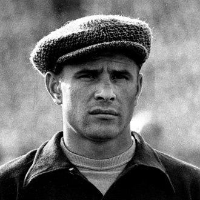

ПРИВЕТ УЧАСНИКАМ СОРЕВНОВАНИЙ!
Футбол

Вернулись Яшины в Москву в 1944 году. Лев, продолжая работать
на заводе, всё свободное время посвящал любимой игре, выступая вратарём
за сборную команду Тушина. В 18 лет его призвали в армию. Служить
довелось в Москве, и здесь его заметил тренер футбольного клуба «Динамо»
А. И. Чернышёв, пригласивший его в молодёжную команду клуба. А весной 1949г
Яшин стал уже третьим вратарём основной команды – дублёром Алексея Хомича и
Вальтера Саная. С тех пор Лев Яшин играл только за этот клуб, вплоть до
окончания своей футбольной карьеры в 1971 году.
ГЛАВНОЕ НЕ ПОБЕДА, А УЧАСТИЕ!